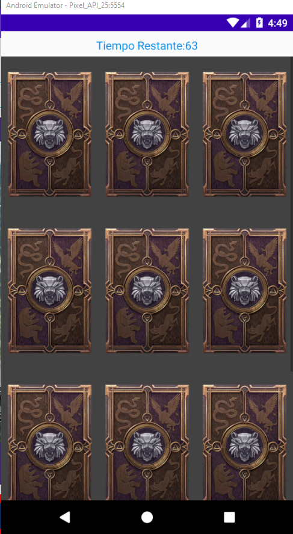
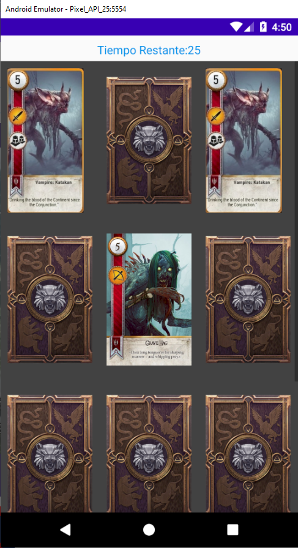
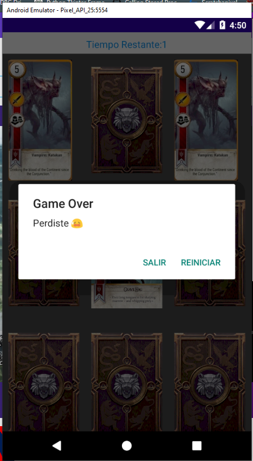

The Witcher Card Game



Tecnologias Utilizadas
 Kotlin
Kotlin
Es una serie de videojuegos de rol de acción y fantasía desarrollados por CD Projekt RED, basados en la saga de novelas de Geralt de Rivia, escritas por el autor polaco Andrzej Sapkowski.
Basados en la saga de Geralt de Rivia, uno de los pocos brujos que quedan, asesinos de monstruos a sueldo con habilidades especiales. Los videojuegos cuentan las aventuras de Geralt a través de misiones que el jugador debe completar.
El juego se encuentra en mi repositorio personal Repositorio
Tambien podra encontrar con mas juego que he ido desarollando y aplicaciones sencillas.